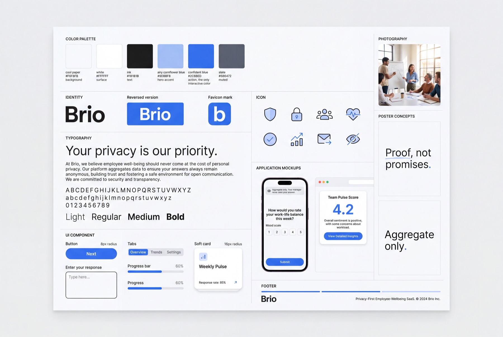
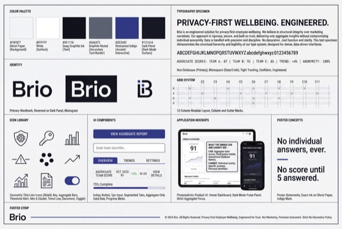
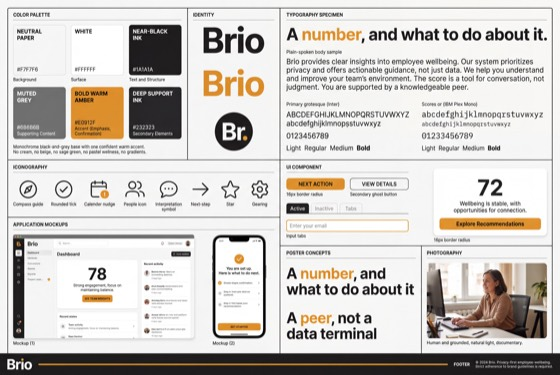
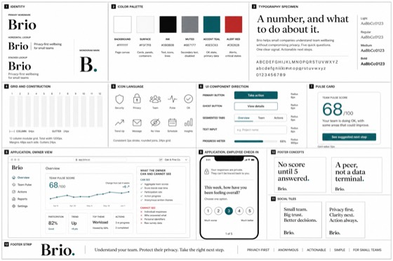
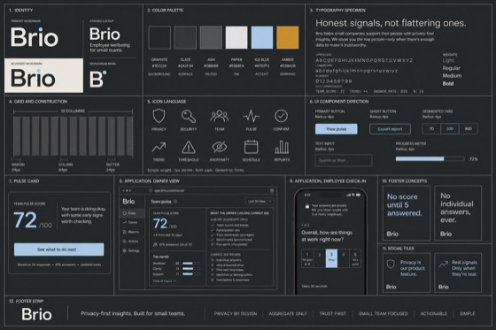
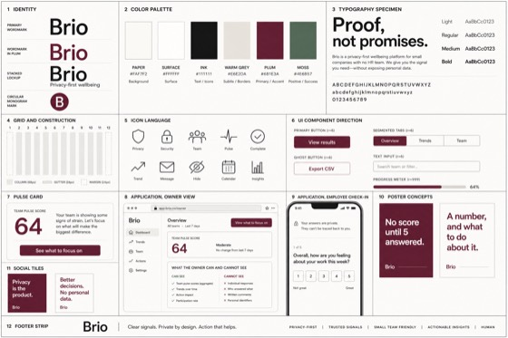

Your team pulse
Steady
The team is holding steady this week, in line with last.
Concept
Brio looks like a privacy product, not a wellness brand. That is the whole argument of this stage, and every value on this page traces back to it: the palette is sampled from the pixels of brand plate A, the composition is the direction chosen on Directions, and each decision names the attribute it answers. A colour, a shape or a typeface with no pair in the attributes is invention, and is not here.
Sources: DESIGN-artifacts.md at the repository root, design/concept/docs/concept.md, design/concept/docs/references.md. Text on every surface stays governed by voice/docs/voice.md, not by this page.
01
The chosen composition, direction 02, working desk. The pulse, the participation, the privacy line and the next program are on one screen without scrolling, because the operator lives here every week and the owner has two minutes. Specification follows below; this is the thing itself.
Your team pulse
Steady
The team is holding steady this week, in line with last.

Weekly check-in, 1 question, runs continuously
A gentle weekly pulse on how the team is really doing. You get a plain-language read; no individual answers are ever shown to anyone.
SelectThis week
72% answered
Holding steady over the last five cycles. Aggregate only, never who.
Aggregate only. You never see who answered.
Every string here is lifted from the wireframes at nodes 4.0 Dashboard and 5.0 Program library. Nothing on this page is written fresh, because text is the property of the wireframes and the voice, and this stage owns the visual layer only.
02
Five pairs of visual opposites. Each is built from a specific line in the research and a specific technique borrowed from a named reference. This is the thesis of the stage, and everything below is an instance of it.
| Attribute | The line it comes from | How it is expressed here |
|---|---|---|
| A1 Calm and plain, not clinical or surveillance-flavoured | Benchmark C6, reporting must feel honest and non-judgmental rather than clinical or surveillance-flavoured. Yemi E3, E4, the first check-in is where trust is decided. Voice P5, quiet against a loud category. | A light paper background, flat surfaces, no shadow drama, wide spacing. The screen lowers the guard instead of raising it. |
| A2 Proof shown, not privacy promised | Benchmark Mechanism 2, privacy visible in the product UI rather than promised in a policy. Marcus W3, architecture over marketing copy. Yemi E5, a specific sentence, shown. | The privacy line sits inside the working screen, and "what your owner can and cannot see" is rendered as the owner view itself, framed as evidence. |
| A3 Restrained and exact, not loud or persuasive | Voice P5 and P2. Marcus W3, privacy language that sounds like marketing scares him off. | One accent, used only for action. Hairline borders instead of shadows. Type set quiet, no display drama, no second colour asking for attention. |
| A4 Interpretation carried, not a number left bare | Priya O6 and O3, a score without context produces no action. Voice P1, a number never appears without its interpretation, and P4, always a next step. | The pulse card holds the read, the sentence and the next step in one block. A metric tile with a lone number does not exist in this language. |
| A5 Personable and human, not faceless-corporate nor infantile | Designer's taste. ux-patterns.md B4, a knowledgeable peer, not a data terminal. |
Documentary photography of real small teams at real size, never stock smiles and never illustration. Warmth comes from people, not from decoration. |
Recorded from the designer, not inferred by the model.
| Named | The specific thing taken, or refused |
|---|---|
| Signal | Privacy made visible, human warmth, no infantilism. The base direction of the whole language. |
| Linear | Precision. Character from type and rhythm, not from decoration. |
| monobank | Character without corporateness, carried in the details. |
| Not: cream and sage wellness | The category reflex. It can be guessed from the category without reading a line of our data. |
| Not: blobs, emoji, motivational tone | Contradicts voice P5 and P3 directly. |
| Not: corporate stock SaaS | Enterprise theatre for a non-expert operator who needs plain competence. |
A dark register was never refused, so a considered dark mode stays available later. It would have to read calm and precise, in the Linear sense, never as luxury drama. Recorded in concept.md.
03
Six values, taken from the pixels of brand plate A and not from the captions printed on it. Where a caption disagreed with its own swatch, the pixel won. The neutral is not a pure grey: it leans to the accent, which is why the page holds together at all.
Plate A carries no semantic colour at all, so inventing one here would be a value with no origin. Two decisions instead:
| Case | Value | Reason |
|---|---|---|
| Error and alert | #B92928 candidate | Sampled from the alert swatch of plate D, which is a real pixel with a real origin rather than a guess. It is used on this page in the error field only, and it is fixed for good at stage 07, where every error state actually lives. |
| Success | None, on purpose | Voice P3, honest signals never flattering ones, and a success state states the fact and never celebrates. Confirmation is carried by the words and the check icon in ink. A green success colour would be the product congratulating itself. |
Every pair the language actually uses, computed rather than assumed. The one failure is named rather than hidden, and it has a rule attached.
| Foreground | Background | Ratio | Verdict |
|---|---|---|---|
| Ink #1D1D1D | White #FFFFFF | 16.86 | AAA |
| Ink #1D1D1D | Paper #F7F8FC | 15.88 | AAA |
| Muted #5B6171 | White #FFFFFF | 6.19 | AA |
| Muted #5B6171 | Paper #F7F8FC | 5.83 | AA |
| White #FFFFFF | Action #346FEC | 4.53 | AA, the primary button label is legal |
| Ink #1D1D1D | Soft accent #A4BEF3 | 9.02 | AAA, badges are safe |
| Action #346FEC | White #FFFFFF | 4.53 | AA, at the edge |
| Action #346FEC | Paper #F7F8FC | 4.27 | Fails AA. Accent text and links never sit on the page background |
| Soft accent #A4BEF3 | White #FFFFFF | 1.87 | Fails. Decorative only, never text and never a border that carries meaning |
| Alert #B92928 | White #FFFFFF | 6.16 | AA |
The rule that follows from the one failure, and it is a real constraint on stage 07: a link or a piece of text in the action colour sits on a white surface, or it is not in the action colour. On the paper background, links are ink with an underline.
04
Inter Tight for display, Inter for body. The plate gave the character, a neutral low contrast grotesque with an even stroke and open apertures, and the pair was chosen against that character. The name printed on a generated plate proves nothing, so it was not copied.
Figures are tabular, switched on with font-feature-settings: "tnum". A pulse score that shifts sideways as it changes would undercut A4, where the number is the thing being read. Instrument Sans and Public Sans are recorded in DESIGN-artifacts.md as the pair that was considered and not chosen.
05
Radii and spacing measured off the plate as shapes, not read off its captions. Elevation is not part of this language: depth comes from paper against white, which is the Apple restraint recorded in the references.
Controls: buttons, inputs, tabs. Approachable, not playful.
Cards, panels, images. The Signal soft radius scale.
Badges and pills only. Never a button, or the accent starts shouting.
Borders carry the structure. No shadow anywhere in the language.
The step is 4px throughout. It is a scale rather than a set of one-off numbers, because stage 08 turns exactly these values into tokens, and a scale invented twice cannot be reconciled.
06
Real small teams, natural light, documentary. Not stock smiles, not illustration, not blobs. Photography is where A5 lives, and it is the one place the language allows warmth that is not the accent.

In use. Unsplash photo-1630487656049-6db93a53a7e9. Four people at a table, mid-work. Nobody performs for the camera.

In use. Unsplash photo-1590649681928-4b179f773bd5. Two people talking at a desk, daylight, no eye contact with the lens.
The test a photograph has to pass
Both photographs are listed with their identifiers in design/concept/docs/concept.md, under Photo list, so this page stays reproducible on GitHub Pages.
07
Solar linear, one weight, geometric with rounded joins, drawn at 24px with a 1.5 stroke and inlined as SVG. No icon font, no CDN at runtime. Two tones of one accent: the line in ink or in the action colour, fills in the soft accent, and never a third colour.
The coverage plan is deliberate: tab bar, metadata, badge, buttons, states. The "cannot see" mark is a cross in a circle rather than a struck-through eye, because at 20px a struck eye reads as a scribble and this list is the most load-bearing thing on any privacy surface.
08
Where this language came from. The chosen brand plate, the five that were not chosen and why, and the reference table with the exact technique borrowed from each and the persona anxiety it removes.

Chosen: plate A. Light airy surface, one blue accent for action, soft cards, real photography. Decision of the user, 18 August 2026. The palette on this page is sampled from this image, pixel by pixel.





| Source | The technique taken | The persona anxiety it removes |
|---|---|---|
| Signal signal.org, the base |
Split section rhythm, one calm sentence beside one product visual. Soft radius scale, 8px controls and 16px cards. One calm blue as the hero accent on flat backgrounds. | Yemi E3 and E4, plus benchmark C6. Signal proves privacy can feel safe and human at the exact moment trust is decided. |
| Apple apple.com, restraint only |
Privacy stated as calm editorial fact. Depth from tonal and surface contrast rather than shadows. One accent as the only interactive colour. Explicitly not taken: the black cinematic hero and the retail drama. | Marcus W3 and E6. Restraint reads as structural truth, where persuasion reads as marketing. |
| 1Password 1password.com |
The boundary shown as the product itself: screenshots framed as the primary evidence, list rows at 8px radius with a 1px border. | Yemi E5 and Marcus W3. Showing beats telling. |
| Culture Amp mechanism, no visual |
The minimum of 5 and the indirect identification rule. Drives content, never look. | Yemi E3. It is the reason the words "no score until 5 answered" exist at all. |
| Oura mechanism, no visual |
Business model as privacy architecture, rendered in the Apple restraint register. | Marcus W3. The claim is about architecture, so it must not look sold. |
| Krisp, Zendesk product surfaces |
A privacy explainer as a product page rather than a legal document, and a participation form with the privacy link beside the action and aggregate comparison cards. | Yemi E3, Marcus W3. Signal as comparison, never as surveillance. |
An honest gap, carried forward from references.md: Refero holds no true "disclosure before question one" or "what your employer can see" product screen, so that exact mechanism stays sourced from benchmark.md rather than from a visual reference. The category reflex was rejected on sight in the same search: August Health, Function Health, Ease Health, Headspace, all cream, sage and blob.
09
Three real pieces of Brio, built from the values above rather than drawn. These are the first three the kit will inherit at stage 07.
One primary action per screen. Everything else is a plain control, so the eye never has to choose between two blues.
8px radius, 15px label, white on #346FEC at 4.53. Focus is a 2px ring in the action colour, offset by 2px, never a removed outline.
The badge is the verification mark of this product: it states the mechanism, in place, on the surface where data is about to be asked for.

Weekly check-in, 1 question, runs continuously. No individual answers are ever shown to anyone.
Select16px card, 10px image, hairline border, no shadow. Ink on #A4BEF3 measures 9.02, so the badge is legible rather than decorative.
Label above, hint below, error in place. The hint carries the mechanism wherever the field asks for something about people.
We send one invite per address. Nobody is added without an invite.
A team needs at least 5 people before any score can be shown.
The error colour is the candidate from plate D at 6.16 on white. It is the only place on this page where a value that is not yet fixed appears, and it is marked as such in the palette.